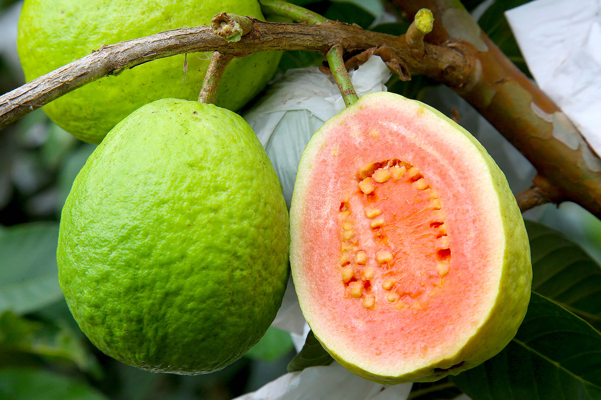
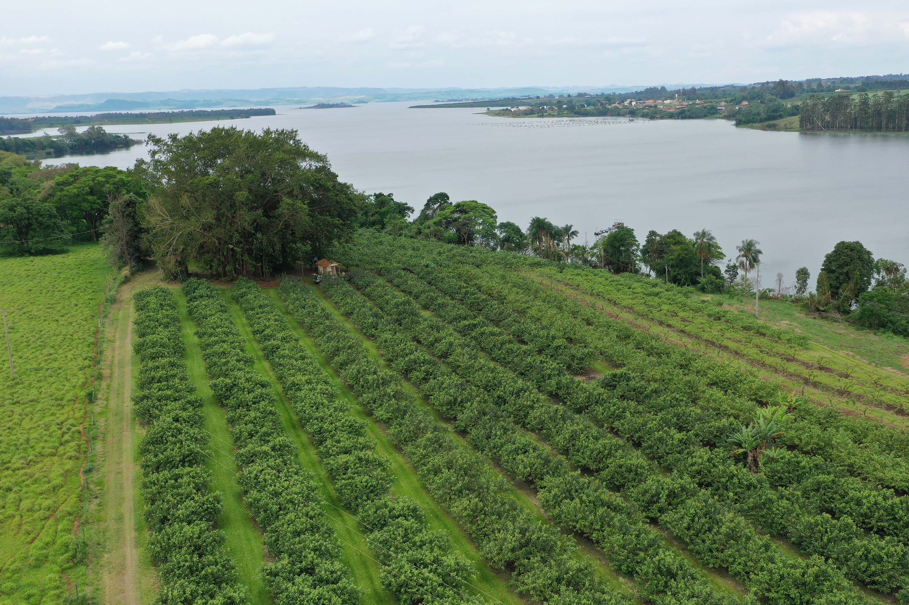

Carlópolis é um munícipio do norte do Paraná com aproximadamente 17 mil habitantes. Ao observar a economia municipal, nota-se com amplo destaque a atividade de cultivo da goiaba, que rendeu a Carlópolis em 2023, o reconhecimento de Capital Nacional da Goiaba de Mesa.
Segundo dados do Instituto Brasileiro de Geografia e Estatística (IBGE), Carlópolis desponta no cenário estadual e nacional no cultivo da fruta. O município responde por aproximadamente 70% da produção de goiaba no Paraná.


Além do amplo destaque estadual, o cultivo da goiaba concede ao município renda e geração de empregos, que movimentam a economia local. A goiaba envolve pelo menos 5 mil trabalhadores na cidade, conforme explicam autoridades locais.